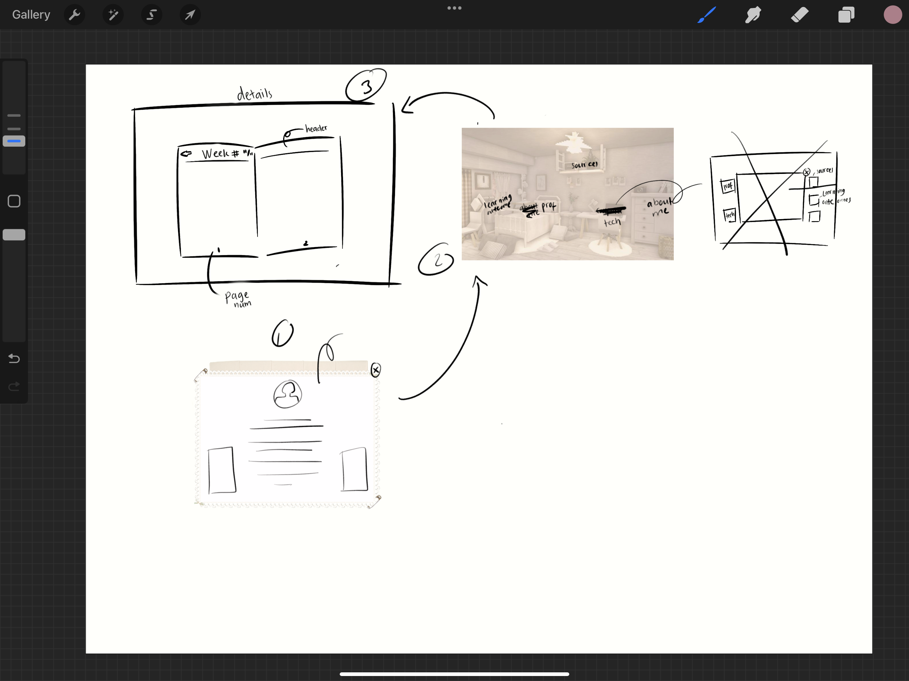
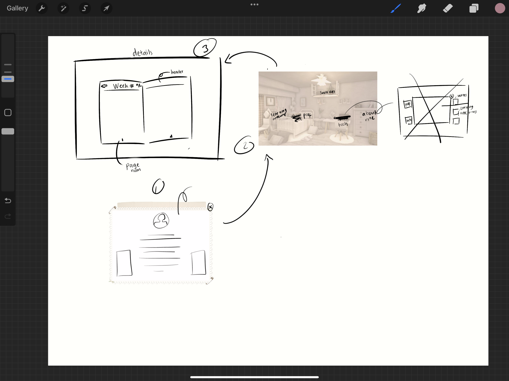

Trends and Developments
almost everyone i know used some slideshow on their portfolio for their photos or images. since i couldn't use slideshow for my images inside the technical skills nor professional learning outcomes, i decided to use them inside my about me page.
i also noticed that there are some people uses scrollbar, but i feel like it doesn't fits my website so i don't use them; i might try to implement them the next chance i have.
Iterative Process
i'm confident to say that i always asking for more feedbacks to upgrade my website. All of the feedbacks i got can be seen on my FeedPulse.
i feel a bit sad because i didn't take much of a screenshot or any documentation to show this learning outcomes.
Interactive Prototypes
i didnt specifically made an interactive prototypes but i made some sketches and wireframes on figma because i feel like it's already enough.
it's also goes the same for my group project, we decided to just make a wireframes on figma and asked some feedback then straight up implement them and made the website version.
i personally think that it'll make the whole process faster.
Target Group
my group and i made sure that we conduct some user research such as a bunch of survey on google forms, personas, and interview. the complete version of it could be found on our GitLab.
 - Copy.png)
.png)
.png)
.png)
.png)
.png)
.PNG) 

.png)
.png)
.png)
.png)
.png)